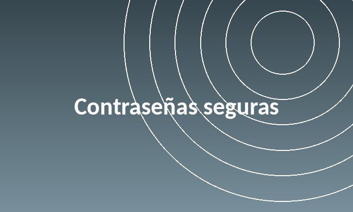
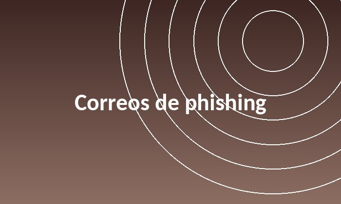

Diagramación de un blog
Volver al índiceLa verificación en dos pasos agrega una capa extra de seguridad a las cuentas. Aunque alguien consiga la contraseña, sin el código del celular no puede entrar. Es de las medidas más simples y efectivas para evitar el robo de cuentas.
Leer más
Una buena contraseña tiene al menos 12 caracteres, mezcla letras, números y símbolos, y no se repite entre servicios. Un gestor de contraseñas ayuda a no tener que memorizarlas todas.
Leer más
El phishing usa correos que imitan a bancos o empresas para robar datos. Revisar el remitente, desconfiar de mensajes urgentes y no abrir enlaces sospechosos evita la mayoría de estos engaños.
Leer más